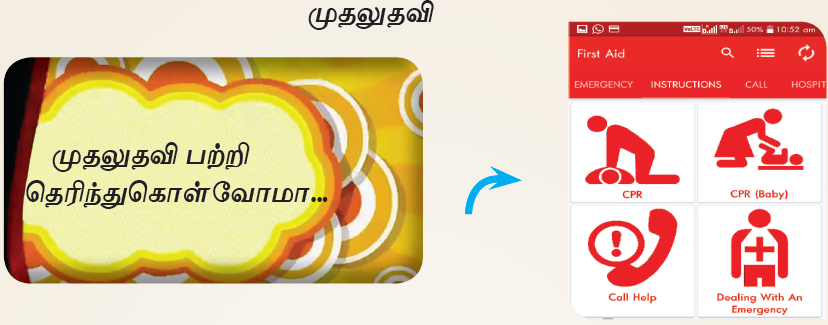
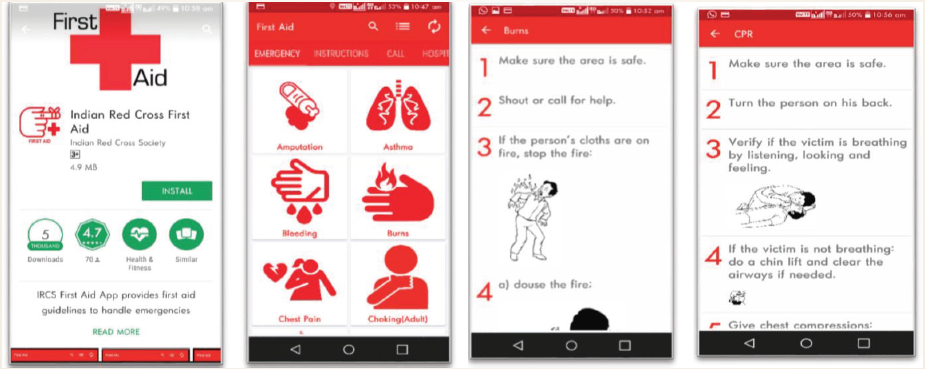

இணையச் செயல்பாடுகள்
முதலுதவி

முதலுதவி பற்றி அறிந்து கொள்வோமா…
படிநிலைகள்:
கொடுக்கப்பட்ட உரலியைப் பயன்படுத்தி, இணையத்திலிருந்து ’First Aid” என்னும் செயலியைப் பதிவிறக்கி, நிறுவிக்கொள்ளவும்.
’First Aid” செயலியைத் திறந்ததும்,’ Emergency, Instructions, Call” போன்ற தெரிவுகள் இருக்கும், அதில் எமர்ஜென்சி என்னும் தலைப்பின் கீழிருக்கும் பல்வேறு உடல்நலக் குறைபாடுகளில் BURNS என்பதைத் தேர்வு செய்யவும்.
தற்போது தீக்காயங்களுக்குச் செய்ய வேண்டிய முதலுதவி அறிவுரைகள் பட்டியலிடப்பட்டிருப்பதைத் தெரிந்து கொள்ளவும்.
மீண்டும் முதல் பக்கத்திற்குச் சென்று ’Instructions’ என்பதைத் தேர்வு செய்து, அதில் சி பி ஆர் என்னும் முதலுதவி செய்வதற்கான படிமுறைகளைத் தெரிந்துகொள்ளவும்.

’முதலுதவி’ காண்பதற்கான உரலி:
https://play.google.com/store/apps/details?id=org.indianredcross.firstaid&hl=en
*கொடுக்கப்பட்டுள்ள படங்கள் அடையாளத்திற்காக மட்டுமே
1. சிறப்புஈனும் செல்வமும் ஈனும் அறத்தின்ஊங்கு
ஆக்கம் எவனோ உயிர்க்கு
2. அறத்தின்ஊங்கு ஆக்கமும் இல்லை அதனை
மறத்தலின் ஊங்குஇல்லை கேடு.
3. ஒல்லும் வகையான் அறவினை ஓவாதே
செல்லும்வாய் எல்லாம் செயல்.
4. மனத்துக்கண் மாசுஇலன் ஆதல் அனைத்துஅறன்
ஆகுல நீர பிற.
5. அழுக்காறு அவாவெகுளி இன்னாச்சொல் நான்கும்
இழுக்கா இயன்றது அறம்.
6. அன்றுஅறிவாம் என்னாது அறம்செய்க மற்றது
பொன்றுங்கால் பொன்றாத் துணை.
7. அறத்தாறு இதுஎன வேண்டா சிவிகை
பொறுத்தானோடு ஊர்ந்தான் இடை.
8. வீழ்நாள் படாஅமை நன்றுஆற்றின் அஃதுஒருவன்
வாழ்நாள் வழியடைக்கும் கல்.
9. அறத்தான் வருவதே இன்பம்மற்று எல்லாம்
புறத்த புகழும் இல.
10. செயற்பாலது ஓரும் அறனே ஒருவற்கு
உயற்பாலது ஓரும் பழி.